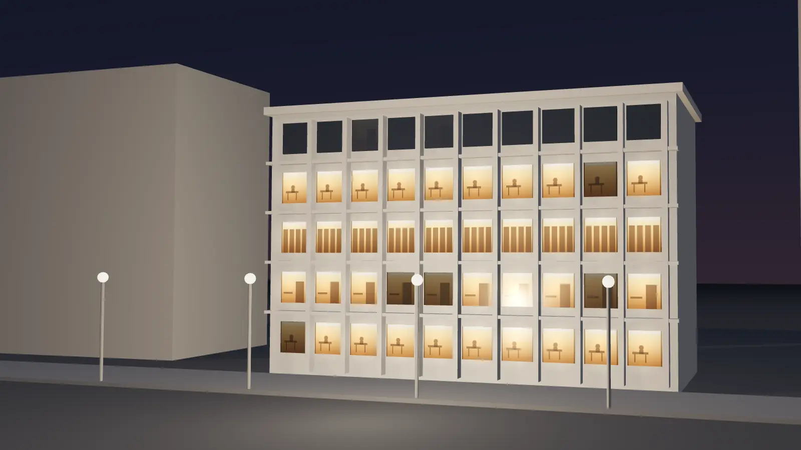

Pracowałam jako prawnik wewnętrzny, blisko zarządów, sprzedaży, zakupów, HR i marketingu. Dziś robię to samo dla firm, które nie chcą budować własnego działu prawnego.
To makiety samego pierwszego ekranu. Po wyborze otwarcia dopasuję do niego resztę strony: usługi, biogram, konsultację i kontakt, tak jak w pozostałych wersjach.